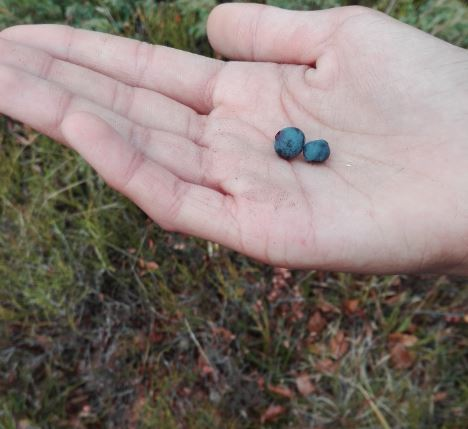
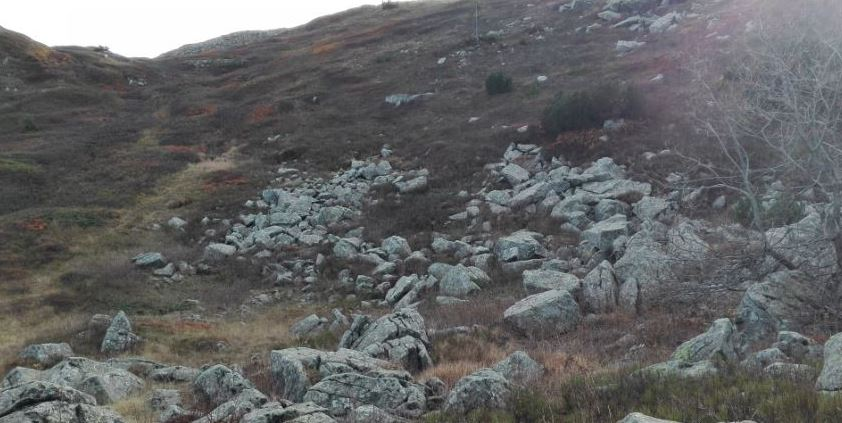
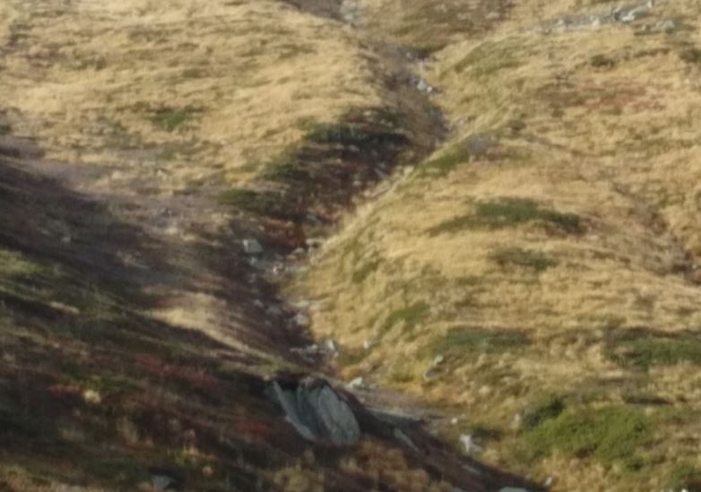

Vaccinieti
Le brughiere ad ericacee sono la formazione più estesa al di sopra del limite degli alberi. Sono caratteristiche di suoli acidi e poco evoluti. Sono formazioni povere di specie. Nell’alta valle del Sestaione si riconoscono due tipi di vaccinieti, uno tipico appenninico caratterizzato da Vaccinium myrtillus, Hypericum richeri e Juniperus sibirica (vedi foto) e l’altro più tipicamente alpino e caratterizzato da Empetrum hermaphroditum (vedi punto di interesse 22) e Vaccinium gaultherioidis (falso mirtillo).

Le frane
Camminando su un sentiero di montagna riusciamo a leggere i segni del tempo sul territorio. Sono segni antichi, come quello lasciato dal ghiacciaio wurmiano nelle rocce, o recentissimi, come la sponda del fiume franata nella primavera scorsa o ancora di un passato abbastanza recente, come le varie frane di roccia che si incontrano lungo il cammino, avvenute 10 o 20 anni fa. Con il termine “frana” si indicano i fenomeni di movimento o caduta di materiale roccioso o sciolto dovuti all’ azione dell’acqua e all’effetto della forza di gravità che, con il passare del tempo, sgretolano i versanti montuosi. In questo caso, però, si parla di tempi lunghissimi, centinaia di milioni di anni.

L’erosione da parte dell’acqua
L'erosione è quel fenomeno ambientale che tende a creare un equilibrio del profilo terrestre, attraverso l'asportazione graduale di suolo o roccia ad opera di agenti atmosferici quali vento, acqua o ghiaccio.
L'erosione del suolo da parte dell'acqua è detta anche "dilavamento".
Parte tutto da un velo d'acqua che segue la massima pendenza; in seguito l'erosione si concentra nei solchi generati: infine l'acqua, scorrendo sempre nel solito punto, ha cominciato a scavare nel terreno dei solchi che diventeranno sempre più profondi.